ビル運用のデータ基盤を、
自分たちの手に。
ベンダーロックインなしで、設備データの収集・蓄積・可視化・制御をワンストップに。 Building OS は、スマートビルの「データの土台」になるオープンソースプラットフォームです。
スマートビルの現場が抱える課題
-
データのサイロ化
空調は空調の、電力は電力のシステムに閉じてデータが分断され、横断的な分析や活用が難しい。
→ すべての設備データを共通のデータモデルと単一の API に集約します。
-
クラウド・ベンダー依存
特定ベンダーのマネージドサービスに深く依存すると、コストと事業継続性のリスク、 そしてデータ主権の問題がつきまとう。
→ 全部オープンソース。オンプレでも任意のクラウドでも自前で運用できます。
-
プロトコルの差異
BACnet / OPC UA / MQTT など、現場ごと・設備ごとに接続方式が異なり、つなぎ込みのたびに 個別開発が発生する。
→ ゲートウェイ層がプロトコル差異を吸収し、共通の契約でつながります。
誰のためのプラットフォームか
-
ビルオーナー・運用者
設備データを自社の資産として蓄積。既存のビル管理システム(BAS)の横に置ける、 独立したデータ基盤として使えます。
-
実践者(SIer・アプリ開発者)
REST + gRPC の API、Swagger 定義、生成済みクライアントで、ビルデータを使った アプリケーションをすぐに作り始められます。
-
研究者・教育
すべてオープンソースで、すべてローカルで再現可能。デジタルツインや 建物オントロジー研究の実験台としても使えます。
主要機能
建物の構造をそのままデータモデルに
建物→フロア→空間→機器→ポイントの階層をデジタルツイン(OxiGraph / SPARQL)として管理。 管理画面から Turtle ファイルをアップロードして、ツインの構築・更新ができます。
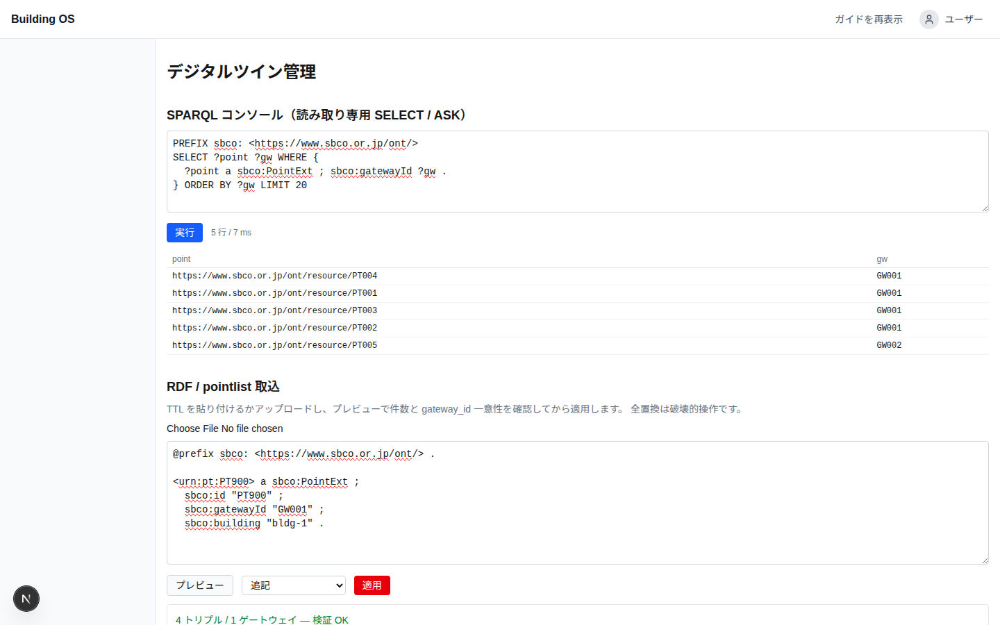
最新値も 1 年前も、同じ API で
直近の値は Hot(NATS KV)から、過去の履歴や集計は Parquet レイクから — データの置き場所は API が自動選択します。利用者はポイントを選んで期間を指定するだけです。
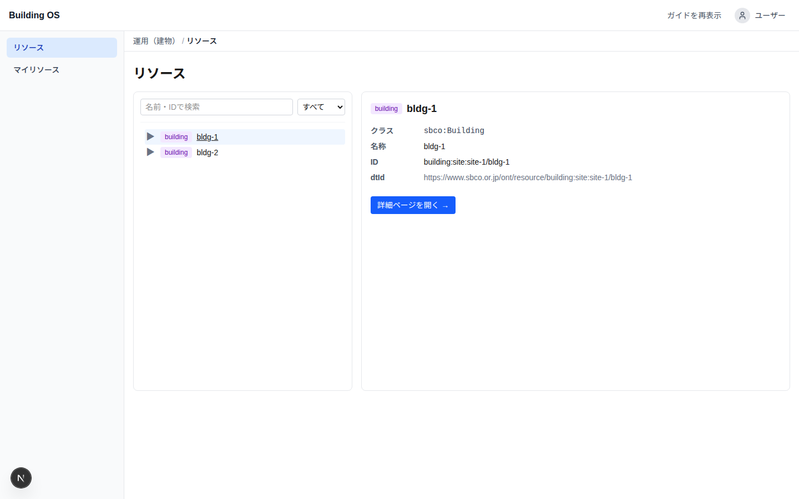
開いている画面が、今の値を追いかける
ポイント詳細を開いておけば、最新値は再読み込みしなくても更新されます。サーバーは最新値の変化を gRPC-web のストリームで画面へ送り、画面には「自動更新中」と表示されます。接続が切れても自動で つなぎ直し、つなぎ直した直後に今の値を受け取るので、切れている間の変化も取りこぼしません。
配信の前には、そのポイントを読む権限があるかを確認します。ストリームは最長 5 分(トークンの期限が 先ならそこまで)で区切り直すので、権限を外した人の画面も、その時間内に止まります。
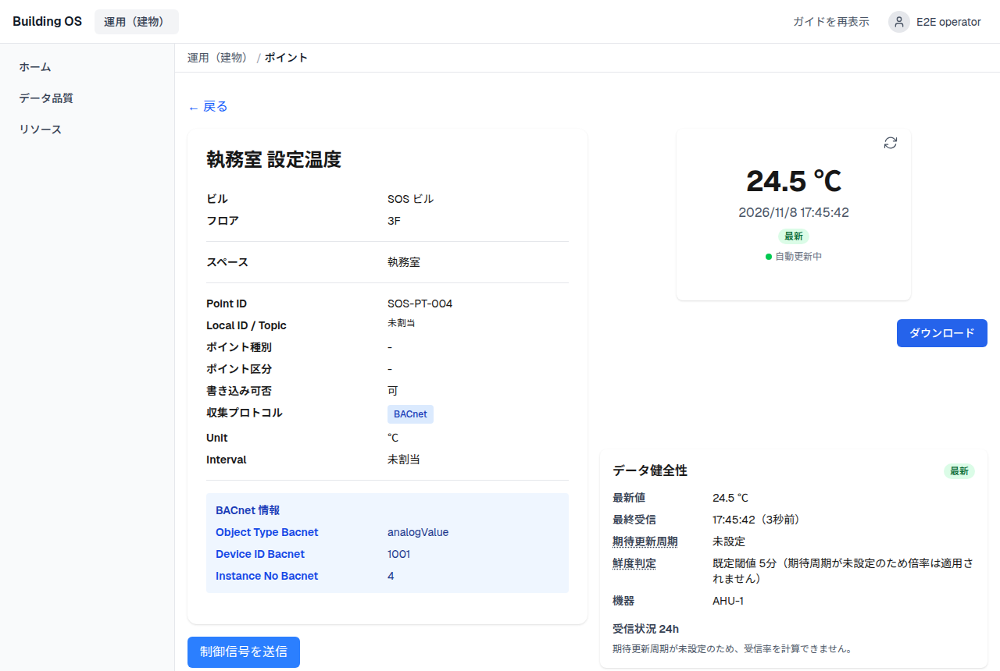
制御は、確実に・追跡可能に
ポイント単位の制御はゲートウェイ別にルーティングされ、結果は非同期で返ります。 オフラインのゲートウェイには待たされずに即時エラー(503)。すべての制御操作は 監査証跡としてデータベースに記録されます。
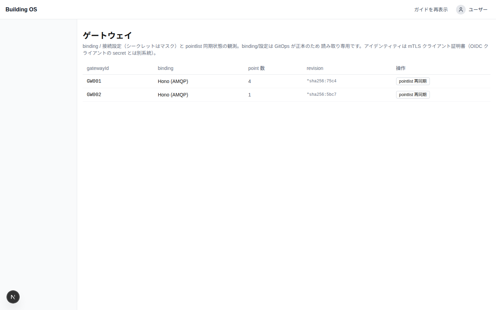
制御が「効いたか」まで確かめる
ゲートウェイの「成功」は、書き込みが受け付けられたという意味でしかありません。デジタルツインで
確認用ポイント(bos:feedbackPoint)を宣言しておくと、制御のあとにそのポイントの値を
見張り、期待した値になったかを照合します(既定 60 秒、最長 300 秒、数値は許容差も指定可)。
結果は「反映を確認」「不一致」「確認用の値が届かない」「照合できない」のいずれかとして、 画面に 2 段目の結果として表示され、制御履歴の「反映」列にも残ります。
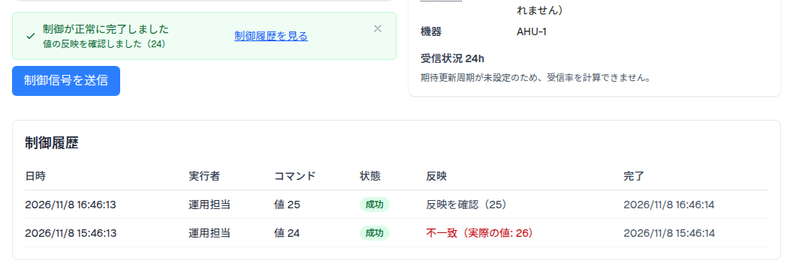
Keycloak によるエンタープライズ認証
OIDC / JWT によるユーザー認証と、ロール・グループに基づくリソース単位の認可。 「このユーザーはこの建物のこのフロアまで」という粒度でアクセスを制御できます。
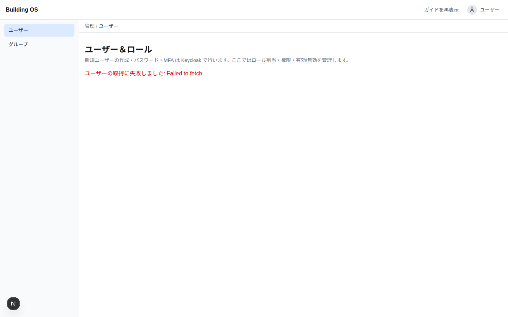
異常を見つけて、追跡して、確認する
データが届いていない(鮮度切れ・欠測)、値が閾値を超えた、ゲートウェイが切れた — こうした異常を、ポイント単位で判定して一覧します。判定結果はイベントとして残り、 いつ始まり、いつ終わり、誰が確認したかをあとから追えます。
ゲートウェイが切れたときは、配下の数百ポイントが一斉に欠測になっても、ポイントごとには出さず 「ゲートウェイ切断」の 1 件にまとめます。確認応答は運用者・管理者が行い、最初に確認した人が 記録に残ります。判定の根拠(期待周期 × 倍率)はポイント詳細で読めます。
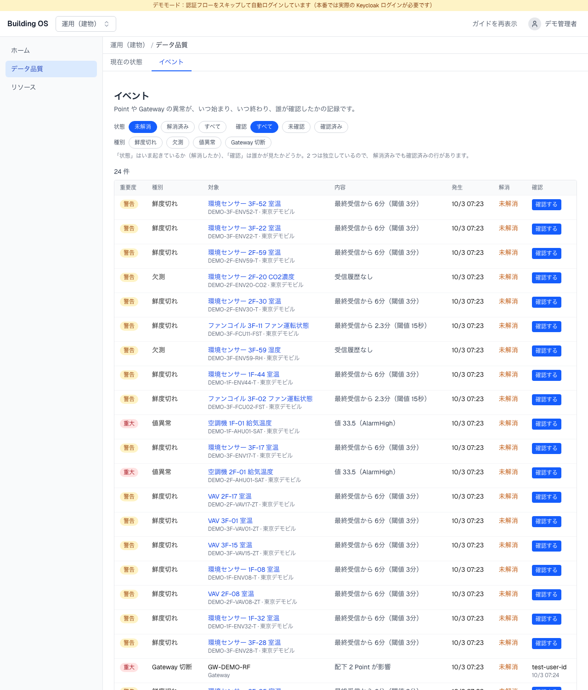
値を送らないポイントを、異常に数えない
書き込み専用のポイントや、BACnet の優先度を解除するためのリリース点は、そもそも値を送ってきません。 これらを「欠測」と判定すると、本当の異常が誤検知に埋もれてしまいます。
リリース点(bos:releaseOf)と、ツインで値を送らないと宣言したポイント
(bos:reportsTelemetry false)は「監視対象外」として判定から外し、件数だけを別に数えます。
一覧には「監視対象外も表示」を選んだときだけ、理由とともに現れます。
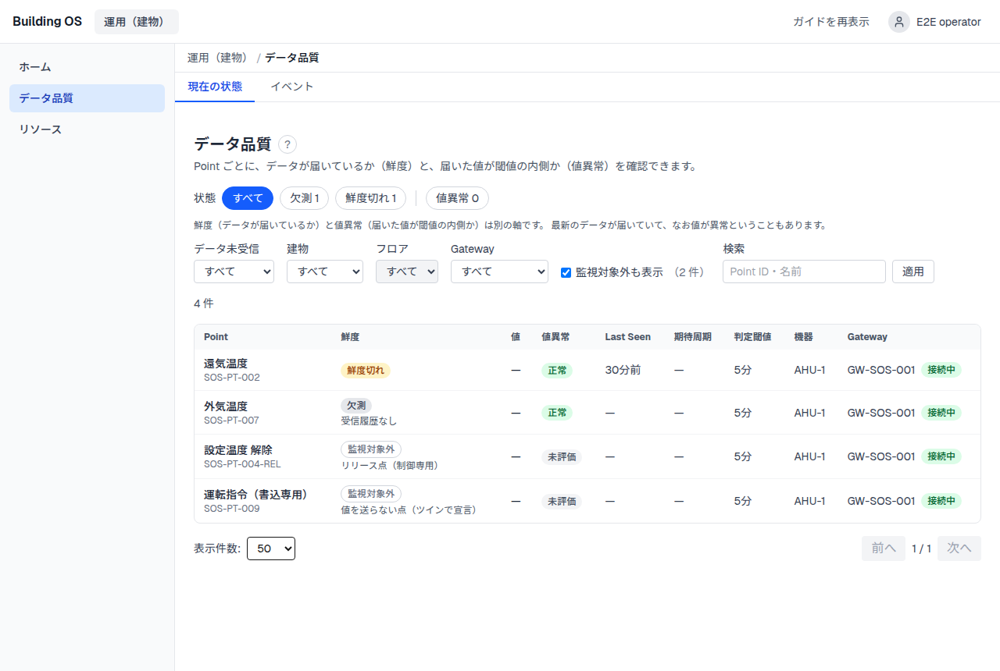
プラットフォームの今を一目で
API・ワーカー・メッセージバスなど各コンポーネントの稼働状態を、ダッシュボードで ひと目で確認。外部の監視基盤がなくても、基本の運用は built-in の画面で回せます。
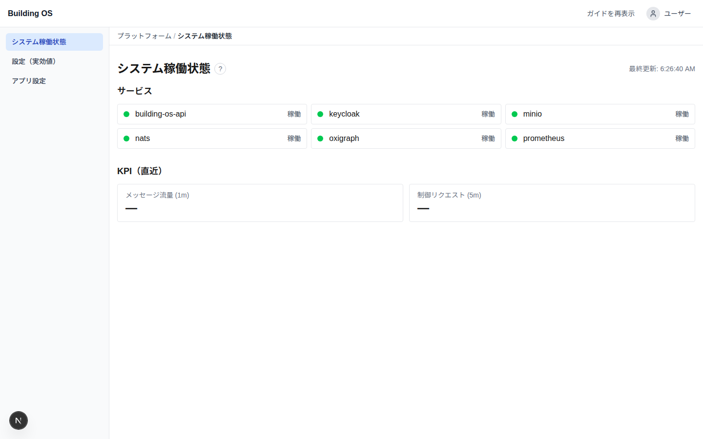
運用の解像度を上げる
より深く見たいときは、OpenTelemetry → Prometheus / Grafana / Loki / Tempo の 可観測性スタックをオプションで有効化。メトリクス・ログ・トレースを横断して追えます。
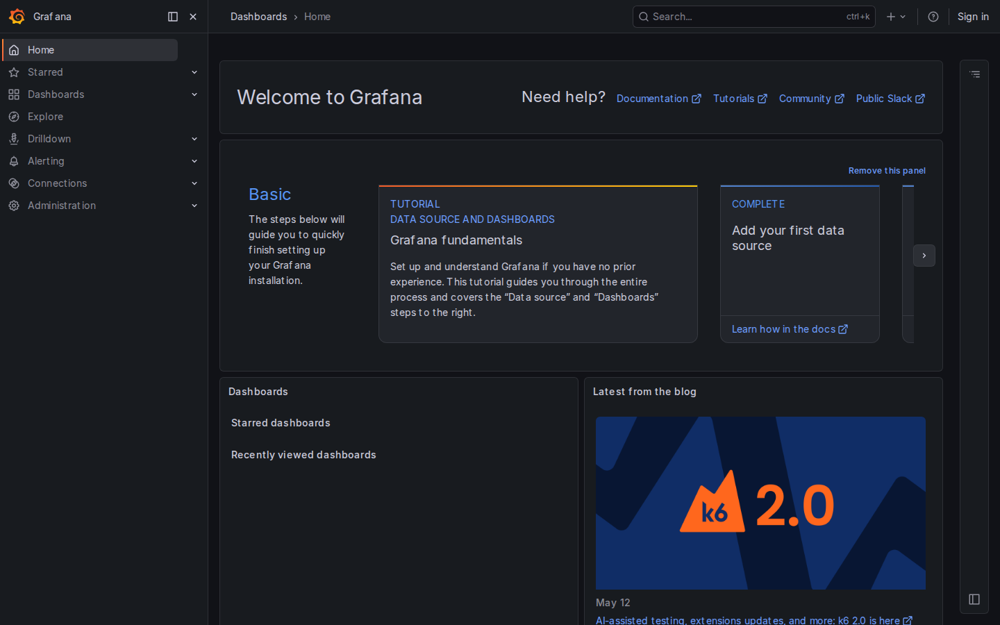
スクリーンショット
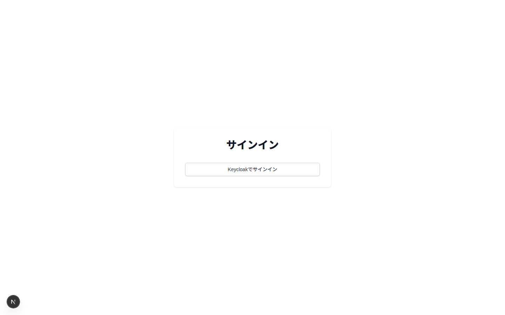
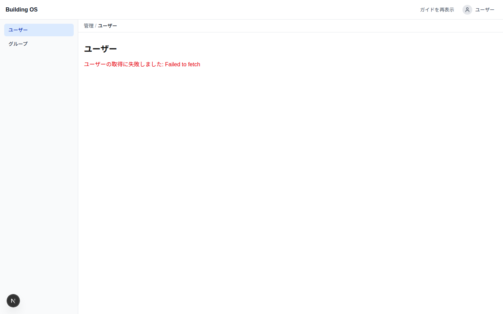
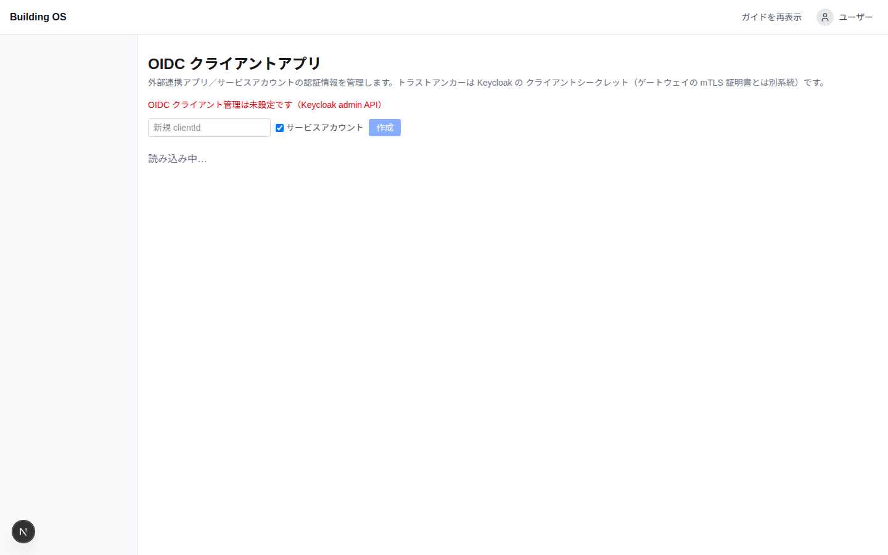
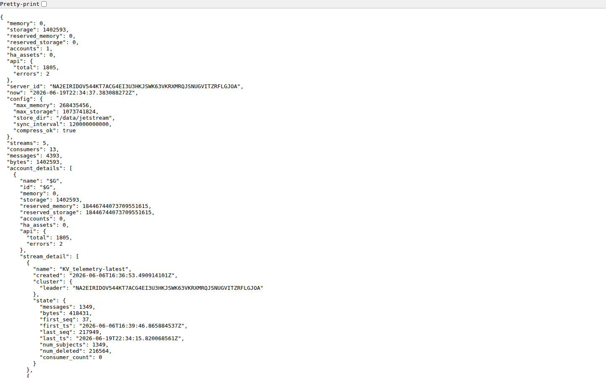
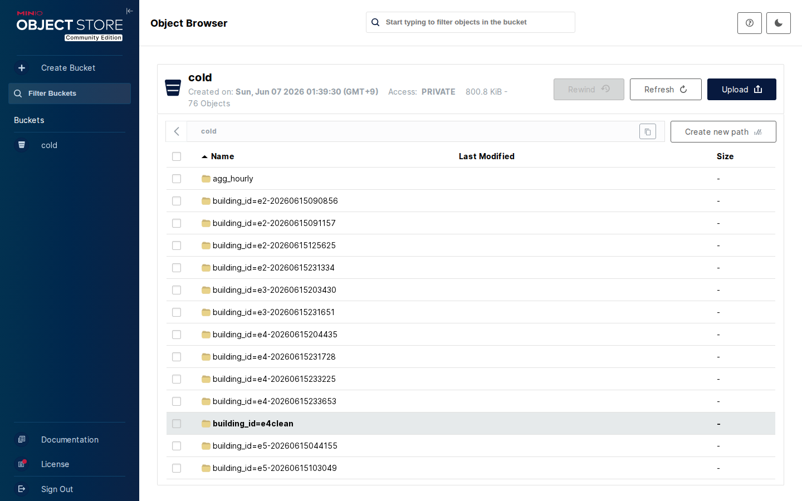